 Formula4J
Here are some code snippets demonstrating Formula4J's API. These examples use hard-coded values, which is artificial. In general, variable values will almost always come from your application's data.
Basic Math
Formula formula = new Formula("3.5 * (6 + 3)");
Decimal answer = formula.getAnswer(); //31.5
Use Some Built-in Functions
Formula formula = new Formula("sqrt(floor(9.5))");
Decimal answer = formula.getAnswer(); // 3.0
formula = new Formula("median(2,5,3,6)");
answer = formula.getAnswer(); // 4
formula = new Formula("max(2,6,3,5)");
answer = formula.getAnswer(); // 6
formula = new Formula("daysbetween(2012,12,25, 2013,12,25)");
answer = formula.getAnswer(); // 365.0
formula = new Formula("sin(0.5)");
answer = formula.getAnswer(); // 0.479425538604203
Populate Variable Values
//formulas usually have variables
//this is the most common use case
Map<String, Decimal> variables = new LinkedHashMap<String, Decimal>();
variables.put("a", Decimal.from(7));
variables.put("b10", Decimal.from(-6));
//note the different constructor used here, passing in the variable map:
Formula formula = new Formula("2 + a + b10", variables);
Decimal answer = formula.getAnswer(); //3
List Functions and Variables in a Formula
Formula formula = new Formula("sqrt(floor(9.5))");
List<String> functionNames = formula.getFunctionNames()); //[sqrt, floor]
formula = new Formula("2 + a + b10");
varNames = formula.getVariableNames()); // [a, b10]
Define a Custom Function in Text
//start with the default function map;
//it maps the name of the function, as it
//appears in a formula, to an underlying class
Map<String, Function> customFunctions = Formula.getDefaultFunctions();
//add a new entry to the function map
Function bmi = new FunctionDefinedInText("bmi(m,h) = m/h^2");
customFunctions.put("bmi", bmi);
//some variable values
Map<String, Decimal> variables = new LinkedHashMap<String, Decimal>();
variables.put("m", Decimal.from(64));
variables.put("h", Decimal.from(8));
//use the new function as part of an expression
//this constructor takes 3 items
Formula formula = new Formula("5 * bmi(m,h)", variables, customFunctions);
Decimal answer = formula.getAnswer(); // 5
Define a Custom Function in Code
//the custom function class
class Bmi implements Function {
public Decimal calculate(Decimal... aArgs) {
Check.numArgs(2, aArgs);
Decimal mass = aArgs[0];
Decimal height = aArgs[1];
return mass.div(height.pow(2));
}
}
...
//start with the default function map;
//it maps the name of the function, as it
//appears in a formula, to an underlying class
Map<String, Function> customFunctions = Formula.getDefaultFunctions();
//add a new entry to the function map
Function bmi = new Bmi(); //the class above
customFunctions.put("bmi", bmi);
//some variable values
Map<String, Decimal> variables = new LinkedHashMap<String, Decimal>();
variables.put("m", Decimal.from(64));
variables.put("h", Decimal.from(8));
//use the new function as part of an expression
//this constructor takes 3 items
Formula formula = new Formula("5 * bmi(m,h)", variables, customFunctions);
Decimal answer = formula.getAnswer(); // 5
Change the Name of a Built-In Function
//start with the default function map
Map<String, Function> customFunctions = Formula.getDefaultFunctions();
//change 'sin' to 'sine'
//first get a reference to the function object itself
Function sineFunction = customFunctions.get("sin");
//remove it from the map, then add it back in using the new name
customFunctions.remove(sineFunction);
customFunctions.put("sine", sineFunction);
//this technique also lets you translate built-in
//function names into different languages
//some variable values
Map<String, Decimal> variables = new LinkedHashMap<String, Decimal>();
variables.put("x", Decimal.from(0.5));
Formula formula = new Formula("sine(x)", variables, customFunctions);
Decimal answer = formula.getAnswer(); // 0.479425538604203